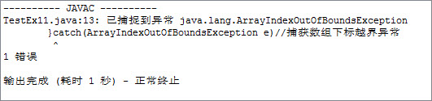
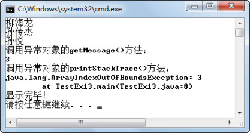

1.4 异常使用注意事项
Java程序采用了try…catch…finally结构对异常进行处理，结构清晰，利于理解。下面我们总结一下在Java异常处理程序中需要注意的地方，避免出现问题。
1.4.1 异常捕获顺序
在前面介绍异常捕获时提到过，catch语句后的异常类型必须与try语句块中抛出异常的类型一致，或者是抛出异常类型的父类，catch语句块的代码才会被执行。如果try语句块中抛出一个异常，而多个catch语句后声明捕获的异常类型，分别是这个抛出的异常类型和这个抛出的异常类型的父类（包括父类的父类），则这些catch语句都能捕获并处理这个异常，程序该如何运行呢？接下来还是通过数组下标越界的案例来理解异常捕获的顺序问题，请看下面的代码：
public class TestEx11
{
public static void main(String[] args)
{
try{
String teachers[]={"柳海龙","孙传杰","孙悦"};
for(int i = 0;i < 4;i++){
System.out.println(teachers[i]);
}
}catch(RuntimeException e) //捕获运行时异常
{
System.out.println("发生运行时异常，成功捕获！");
}catch(ArrayIndexOutOfBoundsException e) //捕获数组下标越界异常
{
System.out.println("发生数组下标越界异常，成功捕获！");
}catch(Exception e) //捕获所有异常
{
System.out.println("发生异常，成功捕获！");
}finally{
System.out.println("显示完毕！");
}
}
}
编译上面的程序，编译器报错，显示错误信息如图1.13所示。
从继承关系上来说，数组下标越界异常ArrayIndexOutOfBoundsException是运行时异常RuntimeException的子类，而运行时异常RuntimeException又是Exception异常的子类，我们在捕获异常的时候，应该按照“从小到大”的顺序捕获异常，这样才能保证逐层捕获，从而避免父类的大的异常进行了捕获，导致子类的小的异常无法进行捕获的情况。将上面的代码调整为先捕获数组下标越界异常ArrayIndexOutOfBoundsException，再捕获运行时异常RuntimeException，编译运行，程序运行结果如图1.14所示。

图1.13 异常捕获顺序一

图1.14 异常捕获顺序二
1.4.2 异常对象
在前面编写异常处理代码时，catch语句后，针对捕获的不同类型的异常，都获取了该异常的对象。例如下面的代码中，对象e即表示捕获到的数组下标越界异常。
try{
//try代码块
}catch(ArrayIndexOutOfBoundsException e)//捕获数组下标越界异常
{
//异常处理代码
}
在前面的异常处理代码中，都没有使用这个捕获到的异常对象。在实际编程中，常用的异常对象的方法有两个，一个方法是printStackTrace()，用于输出异常的堆栈信息，其中堆栈信息包括程序运行到当前类的执行流程，显示方法调用序列；另一个方法是getMessage()，用于返回异常详细信息的字符串。两个方法的具体代码如下：
public class TestEx13
{
public static void main(String[] args)
{
try{
String teachers[]={"柳海龙","孙传杰","孙悦"};
for(int i = 0;i < 4;i++){
System.out.println(teachers[i]);
}
}catch(ArrayIndexOutOfBoundsException e)
{
System.out.println("调用异常对象的getMessage()方法：");
System.out.println(e.getMessage());
System.out.println("调用异常对象的printStackTrace()方法：");
e.printStackTrace();
}finally{
System.out.println("显示完毕！");
}
}
}
编译、运行程序，程序捕获数组下标越界异常之后，先输出异常对象的getMessage()方法的结果，之后再调用异常对象的printStackTrace()方法输出堆栈信息。程序运行结果如图1.15所示。

图1.15 异常对象的使用
1.4.3 常见异常
在今后的编程中，异常处理将会被频繁使用，所以对于大家而言，了解一些常见的异常（即使这些异常现在来说还不能被完全理解）也是非常有必要的。前面用到的数组下标越界异常以及算数异常，这里不再赘述。
- NullPointerException
空指针异常（程序员经常会遇到）属于运行时异常。解释为程序遇到了空指针，简单地说，就是调用了未经初始化的对象或者不存在的对象，或是访问或修改null对象的属性。比如说，对数组操作时出现空指针，很多情况下是程序员把数组的初始化和数组元素的初始化混淆起来了，如果在数组元素还没有初始化的情况下调用了该数组元素，则会抛出空指针异常。
- ClassNotFoundException
望文知义，该异常为类没能找到的异常。出现这种情况一般有三种原因，一是的确不存在该类；二是开发环境进行了调整，例如类的目录结构发生了变化，编译、运行路径发生了变化等；三是在修改类名时，没有修改调用该类的其他类，导致类找不到的情况。
- IllegalArgumentException
抛出该异常表明向方法传递了一个不合法或不正确的参数。
- InputMismatchException
由Scanner抛出，表明Scanner获取的内容与期望类型的模式不匹配，或者该内容超出期望类型的范围。例如需要输入的是能转换为int型的字符串，结果却输入了abc，则会抛出这个异常。
- IllegalAccessException
当应用程序试图创建一个实例、设置或获取一个属性，或者调用一个方法，但当前正在执行的方法无法访问指定类、属性、方法或构造方法的定义时，抛出IllegalAccessException。
- ClassCastException
当试图将对象强制转换为不是实例的子类时，抛出该异常。
- SQLException
提供关于数据库访问错误或其他错误信息的异常。
- IOException
当发生某种I/O异常时，抛出此异常。此类是失败或中断的I/O操作生成的异常的通用类。